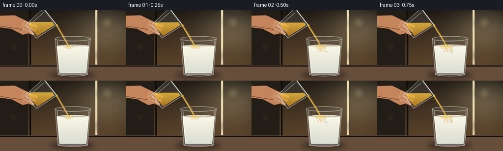
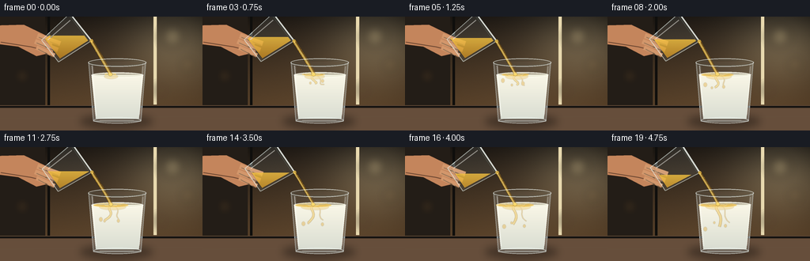
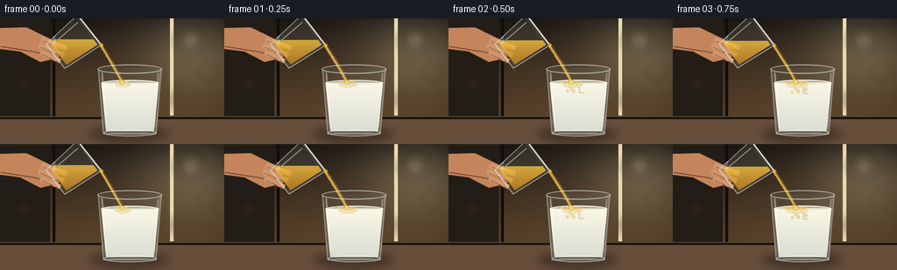
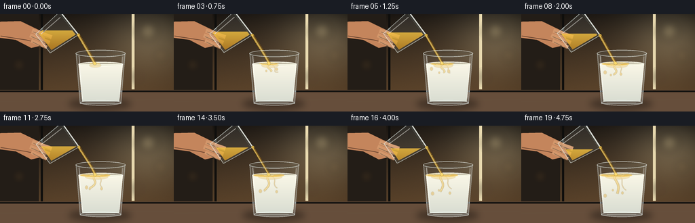

CODING AGENTS AS PIXEL WORLD MODELS
traex/GPT-5.6-Sol · material_0018
点击播放 · 原生 RGB 像素
逐轮保存的候选
回放视频、检查图与代码变化。
每份候选均可单独播放。实际图片检查记录在下方工具轨迹中。
候选 01播放与检查图
点击播放 · 原生 RGB 像素


展开代码变化
--- 上一保存版本
+++ 本次保存版本
@@ -0,0 +1,236 @@
+from pathlib import Path
+import json, math
+import numpy as np
+from PIL import Image, ImageDraw, ImageFilter
+import artifact_io
+
+CASE_DIR = Path(__file__).resolve().parent
+spec = json.loads((CASE_DIR / 'task_spec.json').read_text())
+W, H, N = spec['width'], spec['height'], spec['frames']
+S = 4
+w, h = W*S, H*S
+rng = np.random.default_rng(18)
+
+def sc(v): return int(round(v*S))
+def pts(seq): return [(sc(x), sc(y)) for x,y in seq]
+def ell(draw, box, **kw): draw.ellipse(tuple(sc(v) for v in box), **kw)
+def line(draw, seq, fill, width=1, joint='curve'): draw.line(pts(seq), fill=fill, width=max(1,sc(width)), joint=joint)
+def poly(draw, seq, **kw): draw.polygon(pts(seq), **kw)
+def bezier(p0,p1,p2,p3,n=30):
+ out=[]
+ for u in np.linspace(0,1,n):
+ v=1-u
+ out.append((v**3*p0[0]+3*v*v*u*p1[0]+3*v*u*u*p2[0]+u**3*p3[0],
+ v**3*p0[1]+3*v*v*u*p1[1]+3*v*u*u*p2[1]+u**3*p3[1]))
+ return out
+
+def rgba_layer(): return Image.new('RGBA',(w,h),(0,0,0,0))
+
+def transformed(cx,cy,ang, xy):
+ co,si=math.cos(ang),math.sin(ang)
+ return [(cx+x*co-y*si, cy+x*si+y*co) for x,y in xy]
+
+def background(frame_idx):
+ # Cinematic warm kitchen backdrop, deliberately defocused.
+ yy,xx=np.mgrid[0:h,0:w]
+ y=yy/S; x=xx/S
+ top=np.array([36,30,24.],dtype=float); bot=np.array([103,76,48.],dtype=float)
+ q=np.clip(y/132,0,1)[...,None]
+ arr=top*(1-q)+bot*q
+ # soft window glow from right
+ glow=np.exp(-(((x-222)/66)**2+((y-38)/48)**2))[...,None]
+ arr += glow*np.array([54,51,40.])
+ # vignette and tiny sensor-like texture
+ vign=np.clip(((x-128)/175)**2+((y-68)/105)**2,0,1)[...,None]
+ arr-=vign*np.array([18,15,12.])
+ texture=rng.normal(0,0.7,(h,w,1))
+ arr=np.clip(arr+texture,0,255).astype(np.uint8)
+ im=Image.fromarray(arr,'RGB').convert('RGBA')
+ d=ImageDraw.Draw(im,'RGBA')
+ # abstract backsplash/cabinet geometry
+ d.rectangle((0,0,sc(57),sc(116)), fill=(35,29,23,105))
+ d.rectangle((sc(60),0,sc(63),sc(112)), fill=(15,14,12,55))
+ d.rectangle((sc(194),0,sc(198),sc(111)), fill=(232,217,175,20))
+ # bokeh highlights
+ b=rgba_layer(); bd=ImageDraw.Draw(b,'RGBA')
+ for bx,by,br,col in [(218,25,12,(255,232,172,54)),(237,61,7,(255,205,128,48)),
+ (28,75,7,(233,163,85,34)),(203,93,5,(255,224,177,35))]:
+ ell(bd,(bx-br,by-br,bx+br,by+br),fill=col)
+ b=b.filter(ImageFilter.GaussianBlur(sc(6)))
+ im=Image.alpha_composite(im,b)
+ # countertop and rear seam
+ d=ImageDraw.Draw(im,'RGBA')
+ d.rectangle((0,sc(112),w,h), fill=(92,70,52,255))
+ d.rectangle((0,sc(113),w,sc(115)), fill=(20,18,16,92))
+ # stone gradient overlay
+ ov=rgba_layer(); od=ImageDraw.Draw(ov,'RGBA')
+ od.rectangle((0,sc(116),w,h),fill=(169,137,105,32))
+ line(od,[(0,129),(256,126)],(224,194,158,20),1)
+ im=Image.alpha_composite(im,ov)
+ return im
+
+def render(i):
+ p=i/(N-1)
+ im=background(i)
+ # Contact shadows, softened.
+ sh=rgba_layer(); sd=ImageDraw.Draw(sh,'RGBA')
+ ell(sd,(101,124,193,141),fill=(8,7,6,110))
+ ell(sd,(108,127,186,138),fill=(5,4,3,95))
+ sh=sh.filter(ImageFilter.GaussianBlur(sc(5)))
+ im=Image.alpha_composite(im,sh)
+
+ # Receiving tumbler: tapered clear glass.
+ outer=[(111.5,56.5),(185,56.5),(178.5,133),(118,133)]
+ inner=[(115,60),(181.3,60),(175.5,129.5),(121,129.5)]
+ glass=rgba_layer(); gd=ImageDraw.Draw(glass,'RGBA')
+ poly(gd,outer,fill=(211,225,225,18))
+ # cool refracted edge bands
+ poly(gd,[(112,58),(118,61),(122,129),(118,132)],fill=(228,244,246,42))
+ poly(gd,[(179.7,59),(184.2,58),(178.1,132),(174,129)],fill=(244,249,244,52))
+ line(gd,[(112,58),(118,132),(178,132),(184,58)],(227,239,238,112),1.15)
+ line(gd,[(114.8,60),(121,129),(175.5,129),(181.3,60)],(109,130,130,45),0.65)
+ im=Image.alpha_composite(im,glass)
+
+ # Milk body clipped in glass. Level rises subtly as oil arrives.
+ level=73.5-1.1*p
+ mask=Image.new('L',(w,h),0); md=ImageDraw.Draw(mask)
+ poly(md,[(115.6,level),(181,level),(175.4,129),(121,129)],fill=255)
+ yy=np.arange(h)[:,None]/S
+ milk_rgb=np.zeros((h,w,4),dtype=np.uint8)
+ depth=np.clip((yy-level)/58,0,1)
+ base=(np.array([250,247,231])[None,None,:]*(1-depth[...,None])+
+ np.array([216,220,209])[None,None,:]*depth[...,None])
+ milk_rgb[:,:,:3]=np.clip(base,0,255)
+ milk_rgb[:,:,3]=np.asarray(mask)
+ milk=Image.fromarray(milk_rgb,'RGBA')
+ im=Image.alpha_composite(im,milk)
+ # Milk surface, softly elliptical.
+ surf=rgba_layer(); d=ImageDraw.Draw(surf,'RGBA')
+ ell(d,(115.5,level-3.3,181.2,level+3.8),fill=(245,243,224,245),outline=(255,255,246,180),width=sc(.7))
+ ell(d,(118,level-1.6,179,level+2.5),fill=(231,231,210,135))
+ im=Image.alpha_composite(im,surf)
+
+ # Golden oil beneath impact: suspended ribbons and droplets, masked inside milk.
+ sw=rgba_layer(); wd=ImageDraw.Draw(sw,'RGBA')
+ impact_x=139.5+0.8*math.sin(i*.65)
+ growth=1-math.exp(-3.2*(p+.04))
+ # translucent mixing veil near the top
+ ell(wd,(impact_x-7-9*growth,level-1,impact_x+8+13*growth,level+5+2*growth),
+ fill=(225,171,47,70))
+ if i>=2:
+ tendril_len=8+20*p
+ c1=bezier((impact_x,level+1),(impact_x-8,level+6),(impact_x+9,level+10),
+ (impact_x-3+5*math.sin(i*.4),level+tendril_len),24)
+ line(wd,c1,(219,162,36,118),2.2+1.2*p)
+ line(wd,c1,(255,215,91,90),.7)
+ c2=bezier((impact_x+5,level+2),(impact_x+14,level+7),(impact_x+3,level+13),
+ (impact_x+12+3*math.cos(i*.35),level+10+13*p),22)
+ line(wd,c2,(201,142,28,80),1.4)
+ for k in range(3):
+ prog=np.clip(p*1.45-k*.18,0,1)
+ if prog>0:
+ dx=(-1 if k%2==0 else 1)*(6+4*k)+2*math.sin(i*.45+k)
+ cy=level+7+prog*(16+4*k)
+ r=1.3+0.45*k
+ ell(wd,(impact_x+dx-r,cy-r*1.25,impact_x+dx+r,cy+r*1.25),fill=(222,163,41,95))
+ # confine swirls to milk interior
+ a=np.array(sw.getchannel('A'),dtype=np.uint16)
+ a=(a*np.array(mask,dtype=np.uint16)//255).astype(np.uint8)
+ sw.putalpha(Image.fromarray(a,'L'))
+ sw=sw.filter(ImageFilter.GaussianBlur(sc(.35)))
+ im=Image.alpha_composite(im,sw)
+
+ # Expanding immiscible oil lens at the milk surface.
+ oil=rgba_layer(); od=ImageDraw.Draw(oil,'RGBA')
+ pool_w=10+40*growth
+ pool_h=2.1+3.6*growth
+ ell(od,(impact_x-pool_w/2,level-2.0,impact_x+pool_w/2,level-2.0+pool_h),
+ fill=(229,181,65,185),outline=(255,220,120,190),width=sc(.65))
+ ell(od,(impact_x-pool_w*.37,level-1.45,impact_x+pool_w*.34,level+.1),fill=(255,226,133,105))
+ # animated impact ring visible around stream
+ rr=5+((i*2.7)%9)
+ ell(od,(impact_x-rr,level-rr*.2,impact_x+rr,level+rr*.22),outline=(255,250,217,max(15,95-int(rr*7))),width=sc(.6))
+ im=Image.alpha_composite(im,oil)
+
+ # A warm hand and wrist behind the pouring tumbler.
+ hand=rgba_layer(); hd=ImageDraw.Draw(hand,'RGBA')
+ poly(hd,[(-8,11),(30,10),(65,27),(67,45),(46,50),(23,38),(-8,34)],fill=(196,133,92,255))
+ line(hd,[(1,32),(39,38),(59,43)],(118,72,49,80),1)
+ # curled fingers holding glass
+ for k,(x0,y0,x1,y1) in enumerate([(47,24,76,34),(44,31,73,42),(46,39,69,49)]):
+ line(hd,[(x0,y0),(x1,y1)],(211,151,107,255),7.0-k*.6)
+ line(hd,[(x0+2,y0+2),(x1-2,y1+2)],(238,180,133,80),1.3)
+ hand=hand.filter(ImageFilter.GaussianBlur(sc(.35)))
+ im=Image.alpha_composite(im,hand)
+
+ # Pouring tumbler. It tips a little further over the shot.
+ ang=math.radians(52+5*p)
+ cx=83+1.5*p; cy=28-1.2*p
+ out_local=[(-22,-24),(22,-24),(17.5,25),(-17.5,25)]
+ inn_local=[(-19.5,-21.5),(19.5,-21.5),(15.5,21.5),(-15.5,21.5)]
+ out=transformed(cx,cy,ang,out_local); inn=transformed(cx,cy,ang,inn_local)
+ pg=rgba_layer(); pd=ImageDraw.Draw(pg,'RGBA')
+ poly(pd,out,fill=(224,235,230,24))
+ # Oil body as golden lower wedge clipped by inner glass mask.
+ pmask=Image.new('L',(w,h),0); pmd=ImageDraw.Draw(pmask); poly(pmd,inn,fill=255)
+ # free surface falls as pouring proceeds
+ oil_cut=24+11*p
+ arr=np.zeros((h,w,4),dtype=np.uint8)
+ Y=np.arange(h)[:,None]/S
+ shade=np.clip((Y-oil_cut)/36,0,1)
+ arr[:,:,:3]=(np.array([243,193,65])[None,None,:]*(1-shade[...,None])+
+ np.array([176,111,20])[None,None,:]*shade[...,None]).astype(np.uint8)
+ oa=np.array(pmask)
+ oa[(np.arange(h)/S)<oil_cut, :]=0
+ arr[:,:,3]=(oa.astype(np.float32)*.82).astype(np.uint8)
+ oilbody=Image.fromarray(arr,'RGBA')
+ pg=Image.alpha_composite(pg,oilbody)
+ pd=ImageDraw.Draw(pg,'RGBA')
+ # glass structure and highlights
+ line(pd,[out[0],out[1],out[2],out[3],out[0]],(232,244,239,150),1.0)
+ line(pd,[inn[0],inn[1],inn[2],inn[3]],(96,111,102,50),.65)
+ # mouth rim is a strong double line
+ line(pd,[out[0],out[1]],(246,252,246,210),2.0)
+ line(pd,[inn[0],inn[1]],(120,135,127,100),.7)
+ # specular stripe down vessel
+ stripe=transformed(cx,cy,ang,[(-15,-19),(-13,19)])
+ line(pd,stripe,(255,255,248,125),1.25)
+ # amber glint close to pouring lip
+ lip=out[1]
+ ell(pd,(lip[0]-2.2,lip[1]-2.0,lip[0]+2.2,lip[1]+2.0),fill=(255,211,89,200))
+ im=Image.alpha_composite(im,pg)
+
+ # Continuous oil stream, curved and gently narrowing.
+ lip=out[1]
+ end=(impact_x,level-1.1)
+ wobble=1.2*math.sin(i*.7)
+ center=bezier(lip,(lip[0]+6,lip[1]+10),(end[0]-6+wobble,end[1]-12),end,40)
+ stream=rgba_layer(); st=ImageDraw.Draw(stream,'RGBA')
+ width=4.6-1.1*p+0.28*math.sin(i*.8)
+ line(st,center,(220,161,40,225),width)
+ line(st,[(x-.5,y) for x,y in center],(255,221,115,180),width*.38)
+ line(st,[(x+width*.32,y) for x,y in center],(130,83,15,95),width*.22)
+ # bright bead where it hits
+ ell(st,(end[0]-2.4,end[1]-1.2,end[0]+2.4,end[1]+2.7),fill=(255,221,105,210))
+ stream=stream.filter(ImageFilter.GaussianBlur(sc(.18)))
+ im=Image.alpha_composite(im,stream)
+
+ # Final glass highlights over contents, emphasizing transparency and curvature.
+ hi=rgba_layer(); hd=ImageDraw.Draw(hi,'RGBA')
+ line(hd,[(116.2,62),(121.5,125)],(255,255,250,115),1.2)
+ line(hd,[(180.5,63),(176,124)],(255,255,248,82),.9)
+ ell(hd,(111.2,52.7,185,63.2),outline=(238,246,242,175),width=sc(1.0))
+ ell(hd,(113.8,55.1,182.4,61.8),outline=(102,117,112,78),width=sc(.7))
+ # base refraction
+ ell(hd,(118,127.1,178.5,135),fill=(219,231,227,34),outline=(240,248,244,150),width=sc(1))
+ line(hd,[(126,131),(169,131)],(255,255,246,95),.8)
+ im=Image.alpha_composite(im,hi)
+
+ # Gentle vignette and downsample for smooth, photographic edges.
+ rgb=im.convert('RGB')
+ rgb=rgb.resize((W,H),Image.Resampling.LANCZOS)
+ return np.asarray(rgb,dtype=np.uint8)
+
+frames=np.stack([render(i) for i in range(N)],axis=0)
+artifact_io.save(frames, CASE_DIR)
+print(f'saved {frames.shape} RGB frames to {CASE_DIR}')
候选 02播放与检查图
点击播放 · 原生 RGB 像素


展开代码变化
--- 上一保存版本
+++ 本次保存版本
@@ -10,6 +10,7 @@
S = 4
w, h = W*S, H*S
rng = np.random.default_rng(18)
+STATIC_TEXTURE = rng.normal(0, 0.7, (h, w, 1))
def sc(v): return int(round(v*S))
def pts(seq): return [(sc(x), sc(y)) for x,y in seq]
@@ -43,7 +44,7 @@
# vignette and tiny sensor-like texture
vign=np.clip(((x-128)/175)**2+((y-68)/105)**2,0,1)[...,None]
arr-=vign*np.array([18,15,12.])
- texture=rng.normal(0,0.7,(h,w,1))
+ texture=STATIC_TEXTURE
arr=np.clip(arr+texture,0,255).astype(np.uint8)
im=Image.fromarray(arr,'RGB').convert('RGBA')
d=ImageDraw.Draw(im,'RGBA')
可观测工具轨迹
实际执行的命令与返回图片。
命令 1exit 0
/bin/bash -lc "cat prompt.txt && printf '\\n--- GENERATION_RULES ---\\n' && cat GENERATION_RULES.md && printf '\\n--- TASK_SPEC ---\\n' && cat task_spec.json"
命令 2exit 0
/bin/bash -lc "find . -maxdepth 2 -type f -printf '%p\\n' | sort && printf '\\n--- available commands ---\\n' && command -v ffmpeg || true && command -v python3 || true && command -v blender || true"
命令 3exit 0
/bin/bash -lc 'cat artifact_io.py'
命令 4exit 2
/bin/bash -lc "cat > generate.py <<'PY'
from pathlib import Path
import json, math
import numpy as np
from PIL import Image, ImageDraw, ImageFilter
import artifact_io
CASE_DIR = Path(__file__).resolve().parent
spec = json.loads((CASE_DIR / 'task_spec.json').read_text())
W, H, N = spec['width'], spec['height'], spec['frames']
S = 4
w, h = W*S, H*S
rng = np.random.default_rng(18)
def sc(v): return int(round(v*S))
def pts(seq): return [(sc(x), sc(y)) for x,y in seq]
def ell(draw, box, **kw): draw.ellipse(tuple(sc(v) for v in box), **kw)
def line(draw, seq, fill, width=1, joint='curve'): draw.line(pts(seq), fill=fill, width=max(1,sc(width)), joint=joint)
def poly(draw, seq, **kw): draw.polygon(pts(seq), **kw)
def bezier(p0,p1,p2,p3,n=30):
out=[]
for u in np.linspace(0,1,n):
v=1-u
out.append((v**3*p0[0]+3*v*v*u*p1[0]+3*v*u*u*p2[0]+u**3*p3[0],
v**3*p0[1]+3*v*v*u*p1[1]+3*v*u*u*p2[1]+u**3*p3[1]))
return out
def rgba_layer(): return Image.new('RGBA',(w,h),(0,0,0,0))
def transformed(cx,cy,ang, xy):
co,si=math.cos(ang),math.sin(ang)
return [(cx+x*co-y*si, cy+x*si+y*co) for x,y in xy]
def background(frame_idx):
# Cinematic warm kitchen backdrop, deliberately defocused.
yy,xx=np.mgrid[0:h,0:w]
y=yy/S; x=xx/S
top=np.array([36,30,24.],dtype=float); bot=np.array([103,76,48.],dtype=float)
q=np.clip(y/132,0,1)[...,None]
arr=top*(1-q)+bot*q
# soft window glow from right
glow=np.exp(-(((x-222)/66)**2+((y-38)/48)**2))[...,None]
arr += glow*np.array([54,51,40.])
# vignette and tiny sensor-like texture
vign=np.clip(((x-128)/175)**2+((y-68)/105)**2,0,1)[...,None]
arr-=vign*np.array([18,15,12.])
texture=rng.normal(0,0.7,(h,w,1))
arr=np.clip(arr+texture,0,255).astype(np.uint8)
im=Image.fromarray(arr,'RGB').convert('RGBA')
d=ImageDraw.Draw(im,'RGBA')
# abstract backsplash/cabinet geometry
d.rectangle((0,0,sc(57),sc(116)), fill=(35,29,23,105))
d.rectangle((sc(60),0,sc(63),sc(112)), fill=(15,14,12,55))
d.rectangle((sc(194),0,sc(198),sc(111)), fill=(232,217,175,20))
# bokeh highlights
b=rgba_layer(); bd=ImageDraw.Draw(b,'RGBA')
for bx,by,br,col in [(218,25,12,(255,232,172,54)),(237,61,7,(255,205,128,48)),
(28,75,7,(233,163,85,34)),(203,93,5,(255,224,177,35))]:
ell(bd,(bx-br,by-br,bx+br,by+br),fill=col)
b=b.filter(ImageFilter.GaussianBlur(sc(6)))
im=Image.alpha_composite(im,b)
# countertop and rear seam
d=ImageDraw.Draw(im,'RGBA')
d.rectangle((0,sc(112),w,h), fill=(92,70,52,255))
d.rectangle((0,sc(113),w,sc(115)), fill=(20,18,16,92))
# stone gradient overlay
ov=rgba_layer(); od=ImageDraw.Draw(ov,'RGBA')
od.rectangle((0,sc(116),w,h),fill=(169,137,105,32))
line(od,[(0,129),(256,126)],(224,194,158,20),1)
im=Image.alpha_composite(im,ov)
return im
def render(i):
p=i/(N-1)
im=background(i)
# Contact shadows, softened.
sh=rgba_layer(); sd=ImageDraw.Draw(sh,'RGBA')
ell(sd,(101,124,193,141),fill=(8,7,6,110))
ell(sd,(108,127,186,138),fill=(5,4,3,95))
sh=sh.filter(ImageFilter.GaussianBlur(sc(5)))
im=Image.alpha_composite(im,sh)
# Receiving tumbler: tapered clear glass.
outer=[(111.5,56.5),(185,56.5),(178.5,133),(118,133)]
inner=[(115,60),(181.3,60),(175.5,129.5),(121,129.5)]
glass=rgba_layer(); gd=ImageDraw.Draw(glass,'RGBA')
poly(gd,outer,fill=(211,225,225,18))
# cool refracted edge bands
poly(gd,[(112,58),(118,61),(122,129),(118,132)],fill=(228,244,246,42))
poly(gd,[(179.7,59),(184.2,58),(178.1,132),(174,129)],fill=(244,249,244,52))
line(gd,[(112,58),(118,132),(178,132),(184,58)],(227,239,238,112),1.15)
line(gd,[(114.8,60),(121,129),(175.5,129),(181.3,60)],(109,130,130,45),0.65)
im=Image.alpha_composite(im,glass)
# Milk body clipped in glass. Level rises subtly as oil arrives.
level=73.5-1.1*p
mask=Image.new('L',(w,h),0); md=ImageDraw.Draw(mask)
poly(md,[(115.6,level),(181,level),(175.4,129),(121,129)],fill=255)
yy=np.arange(h)[:,None]/S
milk_rgb=np.zeros((h,w,4),dtype=np.uint8)
depth=np.clip((yy-level)/58,0,1)
base=(np.array([250,247,231])[None,None,:]*(1-depth[...,None])+
np.array([216,220,209])[None,None,:]*depth[...,None])
milk_rgb[:,:,:3]=np.clip(base,0,255)
milk_rgb[:,:,3]=np.asarray(mask)
milk=Image.fromarray(milk_rgb,'RGBA')
im=Image.alpha_composite(im,milk)
# Milk surface, softly elliptical.
surf=rgba_layer(); d=ImageDraw.Draw(surf,'RGBA')
ell(d,(115.5,level-3.3,181.2,level+3.8),fill=(245,243,224,245),outline=(255,255,246,180),width=sc(.7))
ell(d,(118,level-1.6,179,level+2.5),fill=(231,231,210,135))
im=Image.alpha_composite(im,surf)
# Golden oil beneath impact: suspended ribbons and droplets, masked inside milk.
sw=rgba_layer(); wd=ImageDraw.Draw(sw,'RGBA')
impact_x=139.5+0.8*math.sin(i*.65)
growth=1-math.exp(-3.2*(p+.04))
# translucent mixing veil near the top
ell(wd,(impact_x-7-9*growth,level-1,impact_x+8+13*growth,level+5+2*growth),
fill=(225,171,47,70))
if i>=2:
tendril_len=8+20*p
c1=bezier((impact_x,level+1),(impact_x-8,level+6),(impact_x+9,level+10),
(impact_x-3+5*math.sin(i*.4),level+tendril_len),24)
line(wd,c1,(219,162,36,118),2.2+1.2*p)
line(wd,c1,(255,215,91,90),.7)
c2=bezier((impact_x+5,level+2),(impact_x+14,level+7),(impact_x+3,level+13),
(impact_x+12+3*math.cos(i*.35),level+10+13*p),22)
line(wd,c2,(201,142,28,80),1.4)
for k in range(3):
prog=np.clip(p*1.45-k*.18,0,1)
if prog>0:
dx=(-1 if k%2==0 else 1)*(6+4*k)+2*math.sin(i*.45+k)
cy=level+7+prog*(16+4*k)
r=1.3+0.45*k
ell(wd,(impact_x+dx-r,cy-r*1.25,impact_x+dx+r,cy+r*1.25),fill=(222,163,41,95))
# confine swirls to milk interior
a=np.array(sw.getchannel('A'),dtype=np.uint16)
a=(a*np.array(mask,dtype=np.uint16)//255).astype(np.uint8)
sw.putalpha(Image.fromarray(a,'L'))
sw=sw.filter(ImageFilter.GaussianBlur(sc(.35)))
im=Image.alpha_composite(im,sw)
# Expanding immiscible oil lens at the milk surface.
oil=rgba_layer(); od=ImageDraw.Draw(oil,'RGBA')
pool_w=10+40*growth
pool_h=2.1+3.6*growth
ell(od,(impact_x-pool_w/2,level-2.0,impact_x+pool_w/2,level-2.0+pool_h),
fill=(229,181,65,185),outline=(255,220,120,190),width=sc(.65))
ell(od,(impact_x-pool_w*.37,level-1.45,impact_x+pool_w*.34,level+.1),fill=(255,226,133,105))
# animated impact ring visible around stream
rr=5+((i*2.7)%9)
ell(od,(impact_x-rr,level-rr*.2,impact_x+rr,level+rr*.22),outline=(255,250,217,max(15,95-int(rr*7))),width=sc(.6))
im=Image.alpha_composite(im,oil)
# A warm hand and wrist behind the pouring tumbler.
hand=rgba_layer(); hd=ImageDraw.Draw(hand,'RGBA')
poly(hd,[(-8,11),(30,10),(65,27),(67,45),(46,50),(23,38),(-8,34)],fill=(196,133,92,255))
line(hd,[(1,32),(39,38),(59,43)],(118,72,49,80),1)
# curled fingers holding glass
for k,(x0,y0,x1,y1) in enumerate([(47,24,76,34),(44,31,73,42),(46,39,69,49)]):
line(hd,[(x0,y0),(x1,y1)],(211,151,107,255),7.0-k*.6)
line(hd,[(x0+2,y0+2),(x1-2,y1+2)],(238,180,133,80),1.3)
hand=hand.filter(ImageFilter.GaussianBlur(sc(.35)))
im=Image.alpha_composite(im,hand)
# Pouring tumbler. It tips a little further over the shot.
ang=math.radians(52+5*p)
cx=83+1.5*p; cy=28-1.2*p
out_local=[(-22,-24),(22,-24),(17.5,25),(-17.5,25)]
inn_local=[(-19.5,-21.5),(19.5,-21.5),(15.5,21.5),(-15.5,21.5)]
out=transformed(cx,cy,ang,out_local); inn=transformed(cx,cy,ang,inn_local)
pg=rgba_layer(); pd=ImageDraw.Draw(pg,'RGBA')
poly(pd,out,fill=(224,235,230,24))
# Oil body as golden lower wedge clipped by inner glass mask.
pmask=Image.new('L',(w,h),0); pmd=ImageDraw.Draw(pmask); poly(pmd,inn,fill=255)
# free surface falls as pouring proceeds
oil_cut=24+11*p
arr=np.zeros((h,w,4),dtype=np.uint8)
Y=np.arange(h)[:,None]/S
shade=np.clip((Y-oil_cut)/36,0,1)
arr[:,:,:3]=(np.array([243,193,65])[None,None,:]*(1-shade[...,None])+
np.array([176,111,20])[None,None,:]*shade[...,None]).astype(np.uint8)
oa=np.array(pmask)
oa[(np.arange(h)[:,None]/S)<oil_cut]=0
arr[:,:,3]=(oa.astype(np.float32)*.82).astype(np.uint8)
oilbody=Image.fromarray(arr,'RGBA')
pg=Image.alpha_composite(pg,oilbody)
pd=ImageDraw.Draw(pg,'RGBA')
# glass structure and highlights
line(pd,[out[0],out[1],out[2],out[3],out[0]],(232,244,239,150),1.0)
line(pd,[inn[0],inn[1],inn[2],inn[3]],(96,111,102,50),.65)
# mouth rim is a strong double line
line(pd,[out[0],out[1]],(246,252,246,210),2.0)
line(pd,[inn[0],inn[1]],(120,135,127,100),.7)
# specular stripe down vessel
stripe=transformed(cx,cy,ang,[(-15,-19),(-13,19)])
line(pd,stripe,(255,255,248,125),1.25)
# amber glint close to pouring lip
lip=out[1]
ell(pd,(lip[0]-2.2,lip[1]-2.0,lip[0]+2.2,lip[1]+2.0),fill=(255,211,89,200))
im=Image.alpha_composite(im,pg)
# Continuous oil stream, curved and gently narrowing.
lip=out[1]
end=(impact_x,level-1.1)
wobble=1.2*math.sin(i*.7)
center=bezier(lip,(lip[0]+6,lip[1]+10),(end[0]-6+wobble,end[1]-12),end,40)
stream=rgba_layer(); st=ImageDraw.Draw(stream,'RGBA')
width=4.6-1.1*p+0.28*math.sin(i*.8)
line(st,center,(220,161,40,225),width)
line(st,[(x-.5,y) for x,y in center],(255,221,115,180),width*.38)
line(st,[(x+width*.32,y) for x,y in center],(130,83,15,95),width*.22)
# bright bead where it hits
ell(st,(end[0]-2.4,end[1]-1.2,end[0]+2.4,end[1]+2.7),fill=(255,221,105,210))
stream=stream.filter(ImageFilter.GaussianBlur(sc(.18)))
im=Image.alpha_composite(im,stream)
# Final glass highlights over contents, emphasizing transparency and curvature.
hi=rgba_layer(); hd=ImageDraw.Draw(hi,'RGBA')
line(hd,[(116.2,62),(121.5,125)],(255,255,250,115),1.2)
line(hd,[(180.5,63),(176,124)],(255,255,248,82),.9)
ell(hd,(111.2,52.7,185,63.2),outline=(238,246,242,175),width=sc(1.0))
ell(hd,(113.8,55.1,182.4,61.8),outline=(102,117,112,78),width=sc(.7))
# base refraction
ell(hd,(118,127.1,178.5,135),fill=(219,231,227,34),outline=(240,248,244,150),width=sc(1))
line(hd,[(126,131),(169,131)],(255,255,246,95),.8)
im=Image.alpha_composite(im,hi)
# Gentle vignette and downsample for smooth, photographic edges.
rgb=im.convert('RGB')
rgb=rgb.resize((W,H),Image.Resampling.LANCZOS)
return np.asarray(rgb,dtype=np.uint8)
frames=np.stack([render(i) for i in range(N)],axis=0)
artifact_io.save(frames, CASE_DIR)
print(f'saved {frames.shape} RGB frames to {CASE_DIR}')
PY
python3 generate.py
ls -lh pixels.npz inspection.png index.html frames/00.png frames/19.png"命令 5exit 0
/bin/bash -lc "python3 - <<'PY'
p='generate.py'
s=open(p).read()
s=s.replace(\"oa[(np.arange(h)[:,None]/S)<oil_cut]=0\", \"oa[(np.arange(h)/S)<oil_cut, :]=0\")
open(p,'w').write(s)
PY
python3 generate.py
python3 - <<'PY'
import numpy as np, json
from PIL import Image
z=np.load('pixels.npz')['pixels']
print('packed pixels:',z.shape,z.dtype,'temporal changed:',[int(np.count_nonzero(z[:,:,i]"'!=z[:,:,i-1])) for i in range(1,z.shape[2])])
for p in ['"'inspection.png','transition_check.png','frames/00.png','frames/10.png','frames/19.png']:
im=Image.open(p); print(p,im.size,im.mode)
PY
ls -lh pixels.npz inspection.png transition_check.png index.html frames/00.png frames/19.png"命令 6exit 0
/bin/bash -lc "python3 - <<'PY'
p='generate.py'
s=open(p).read()
s=s.replace(\"rng = np.random.default_rng(18)\\n\", \"rng = np.random.default_rng(18)\\nSTATIC_TEXTURE = rng.normal(0, 0.7, (h, w, 1))\\n\")
s=s.replace(\"texture=rng.normal(0,0.7,(h,w,1))\", \"texture=STATIC_TEXTURE\")
open(p,'w').write(s)
PY
python3 generate.py
python3 - <<'PY'
from pathlib import Path
import json, numpy as np
from PIL import Image
spec=json.loads(Path('task_spec.json').read_text())
z=np.load('pixels.npz')['pixels']
assert z.shape==(spec['height'],spec['width'],spec['frames']) and z.dtype==np.uint32
assert len(list(Path('frames').glob('*.png')))==spec['frames']
for p in Path('frames').glob('*.png'):
im=Image.open(p); assert im.size==(spec['width'],spec['height']) and im.mode=='RGB'
changes=np.array([np.count_nonzero(z[:,:,i]"'!=z[:,:,i-1]) for i in range(1,z.shape[2])])
print('"'validation: PASS')
print('frames:',spec['frames'],'size:',f\"{spec['width']}x{spec['height']}\",'fps:',spec['fps'])
print('changed pixels per transition: min',changes.min(),'mean',round(changes.mean(),1),'max',changes.max())
print('artifacts:',[(x.name,x.stat().st_size) for x in map(Path,['pixels.npz','index.html','inspection.png','transition_check.png'])])
PY"视觉工具实际返回图片 1

视觉工具实际返回图片 2

保存候选 2 份；完成命令 6 次；可验证图片返回 2 张。原始 API 响应与完整日志保留在本地。